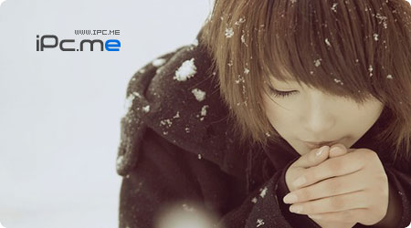

这么静，比诵经声，还静；这么冷，比秋霜，还冷。我骑上我的白鹿，白鹿踏着，尚未落地的雪花，轻如幻影。本来是去远山拾梦，却怕惊醒了，梦中的你。罢了，就让耳朵邂逅这么一场温暖，在睡梦中与你一起过个暖冬吧……

1.两个人(蔡妍)
2.不落的太阳(张佑赫)
3.rising sun
4.因为是女子(kiss)
5.我爱你
6.雪之花(朴孝信)
7.hug
8.timeless
9.the way u are
10.toc toc toc
11.u
12.少女时代(少女时代)
13.火花(高耀太)
14.rising sun
15.一个人(蔡妍)
16.gee(少女时代)
17.my love
18.sorry sorry
19.面具(安七炫)
20.危险的演出(蔡妍)
21.you are the one
22.anyclub
23.阿里阿里(李贞贤)
24.手记(rain)
25.爱上鲨鱼的人鱼
26.那个男人的谎言
27.10 minutes
28.命运(浪漫满屋)
29.谎言(bigbang)
30.神话